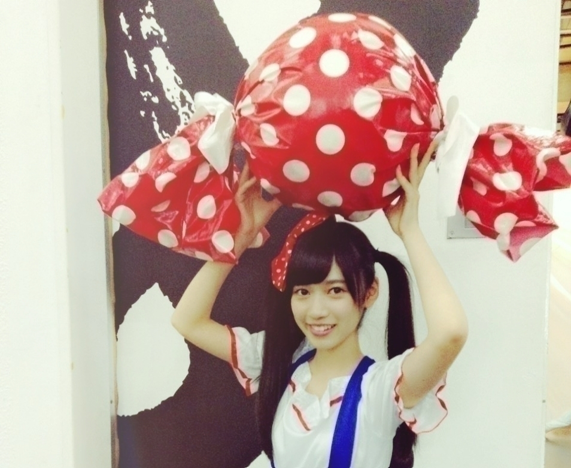

2015/1122Sunアルデンテアルデンテ握手会 だね。アルデンテ
よく聞かれる
最近嫉妬した事ないですか？
でも最近の中元さんブログにみりあたんとご飯に行きましたーっと書いてあったのを見て
あれ、私嫉妬してるぞ
この感情
ってなりました
かりんのブログにも中元さんとお食事って書いてありましたよね、、、
╭( ิ_ ิ )╮オコルデシカシ
( ˙-˙ )、、、なんてね
でもでも
カナさんブログにも
書いてありましたが
カナさんと夢の国行ったんだよ( ･´ｰ･｀)どやさ
この２人って意外だねって
メンバーやスタッフさんにも
言われました。笑
まず、私が先輩含めメンバーと遊ぶのってレアですよね
よく、１人○○して来ましたブログを書いてるので
そんなカナさんとの
夢の国は楽しかったです♫
正直話途切れて沈黙ばかりになりそうなんて考えてたんですが
共感できるお話とかが
沢山あって
並び時間も１時間近くあったけどずーっと喋ってましただからあっという間に感じました
凄く楽しかったです！
ジェットコースターに乗った時も
落ちる前に
カナさん
「らんぜいきててねーー」
テラダ
「はいーー」
うきゃーーーぁ。
でも、凄くすごーく寒かったです
冬ですねm(._.)m
次もまた遊びたいです
遊んで下さい！
次はカナさんオススメの
スイーツ店を紹介して欲しいです♫
カナさんペロリ
テラダポーズです。
手をピシッと揃え
口をポカーンと空ける
これがテラダポーズです
お試しあれm(._.)m
ちなみに、仲良くなると
その人の肩とかを軽く叩く癖があって
（カナさんに軽く肩ツッコミしちゃいました）
あとおしり触ったりとか
ちょっとボディータッチが
増えますがごめんなさい
の割に逆に仕返しで触られたりするとだいぶリアクションに困る上しばらく黙り込みますもしくはテンパります
なんか落ち着かないんです。
取り扱いには気をつけて
そんな今日のブログは
夢の国に行ったということで
夢の国関連のお話をしようかな
かりんが夢の国好きなのは
ブログ読んでると分かると思うのですが
いがいとテラダも負けてないですよ！
幼い頃はディズニー映画で育ってきてて
何事も
覚えるまで
リピートしたい派でした
ちなみに
オリバーのジョルジェットが出てくるワンシーンを
よく1人で演技してました
今思い出すと恥ずかしいm(._.)m
好きな作品と矢印には
好きなキャラ名を書いてます
《オリバーニューヨーク子猫ものがたり》
⇨ジョルジェット
《不思議の国のアリス》
⇨お花たち
歌うお花のシーンが好きでした
《おしゃれキャットマリー》
⇨マリーちゃん
《美女と野獣》
⇨ルミエール、ポット夫人、チップ、ベル
《ヘラクレス》
⇨ハデス様
《ブレイブ、リトル、トースター》
⇨みんな大好きm(._.)m
ブランキーの声が好きでした
ブレイブ共感してくれる方募集中です。
この辺は
もうビデオが擦れるんじゃ無いかっていうくらい
見た記憶があります
あと《ムーラン》
⇨ムーシュー
好きなキャラクターも
握手会などで
よく聞かれるので
書いときました:-)
かりんは夢の国のお供として2人でよく行きます
撮影：伊藤かりん
下の私
こんな笑ってるの珍しい
写真でこの笑顔は
珍しい、、、
1人でもたまに行きます
なんか現実的じゃないところが好きで、、、
1人ならではの
楽しみ方
お一人様のベテランが居たら教えてほしいm(._.)m
また、プリンセス系の映画を中心に見直したい
✄ - - - - - - - - - - - - - - - -
公式サイトの告知情報とかが細かく書かれてて
見やすくなりましたね！
大変有りがたい
ニッカンスポーツ・コム
「NEWSがとまらんぜ」
毎週金曜日配信
寺田蘭世が乃木坂46内や芸能界のニュースを貪欲にキャッチし、らんぜの独特な感覚でどんどん発信していきます！
貪欲？！
どんよくって
こんな漢字だったんですね
読めなくて
貪欲ってなんだろうと思い検索してしまいましたm(._.)m
✄ - - - - - - - - - - - - - - - -

そして、サマンサさんの展示会にお邪魔してきました！
人生初めての
展示会は
ドキドキしました！
サマンサさんは
中学生の頃
お誕生日プレゼントとして
家族にもらってから
ハマって
何個かBagも持ってますし
お財布とパスケースも
サマンサさんで
揃えてたので
展示会は
あれも可愛いこれも可愛いでなんだかワクワクしました:-)
ポッピポピ♫
お洋服も可愛くて
なんと一緒に行った
生駒さんとお揃いを
頼んじゃいました
届くのが待ち遠しいです。
お財布が結構お古に
なってしまってるので
そろそろ新しい物に変えたいな
サマンサさんにお邪魔しようかしら
✄ - - - - - - - - - - - - - - - -

✄ - - - - - - - - - - - - - - - -
乃木中見ちゃダメです。
多分嘘
あーでもなー。笑
握手会の事はまた次のブログに書きます
おやすみなさいです:-D
2015/1116Mon最後のダンスは
おはようございます
こんにちは
こんばんは
自分自身お芝居、演技は見る側としてはとても大好き（宝塚とかね♫）
ですが実際に演技とか
やった事ないし
絶対下手っぴだと思うけど
不良役、ヤンキーに
限っては経験してみたい
今日この頃
寺田蘭世と申します
夜露四苦あってますかね？
早速悪ぶってみた
ごめんなさい:-(
告知○
11/13
原宿POPUNITED○
BABY,THE STARS SHINE BRIGHT 以下店舗
本店/ 札幌店 / 仙台店 / 新潟店 / 長野店 / 高崎店 / 新宿店 / 千葉店 / 横浜店 / 大宮店 / 名古屋店 / 近鉄パッセ店 / 静岡店 / 京都店 / 大阪店 / 梅田店 / 金沢店 / 三宮店 / 広島店 / 松山店 / 福岡店
ALICE and the PIRATES 以下店舗
仙台店 / 新潟店 / 長野店 / 新宿店 / 原宿店 / 千葉店 / 名古屋店 / 静岡店 / 京都店 / 三宮店 / 松山店 / 福岡店
ATELIER BOZ 以下店舗
本店 / 名古屋店 / 大阪店
PUTUMAYO 以下店舗
ラフォーレ原宿店 / lay AGUGLIERIA店 / 新宿店 / 名古屋店 / 大阪店 / 天神店
HELL CAT PUNKS 以下店舗
ラフォーレ原宿店 / 高崎店 / 岡山店 / 福岡店 / HUNDREDCLUB×HELLCATPUNKS KOCHI店
xfrm 以下店舗
渋谷店 / 静岡店 / 名古屋店 / 心斎橋店 / 天神店
ブランドショップ以下店舗
swallowtail Gift Shop / Patisserie Swallowtail Annex / K-BOOKS池袋キャスト館
渋谷TSUTAYA（3階ラック）
TSUTAYA以下店舗
由利本荘店 / 弘前店 / 宇多津店
KEY楽器全店（レジ袋封入）
カラオケの鉄人以下店舗
人形町店 / 銀座店 / 上野店 / 王子店 / 環七西新井店 / 大井町店 / 蒲田店 / 五反田店 / 渋谷センター街店 / 渋谷道玄坂店 / 学芸大学店 / 自由が丘店 / 駒沢店 / 用賀駅前店 / 下北沢店 / 新宿歌舞伎町一番街店 / 新宿歌舞伎町店 / 新宿大ガード店 / 西新宿店 / 飯田橋神楽坂店 / 中野店 / 高円寺店 / 荻窪店 / 高田馬場店 / 大塚店 / 池袋東口店 / 池袋西口店 / 大泉学園店 / 西八王子店 / Karaoke Ya 高尾店 / 町田店 / 聖蹟桜ヶ丘店 / 川崎店 / 武蔵小杉店 / 溝の口店 / 登戸店 / 鶴見店 / 中華街店 / 桜木町店 / 上大岡店 / 二俣川店 / 中央林間店 / 戸塚西口店 / 戸塚店 / 藤沢店 / 茅ヶ崎店 / 松戸店 / 本八幡南口店 / 行徳店 / 船橋店 / 大宮店 / 川越店 / 志木店 / 神田西口駅前店 / 新橋店 / 浜松町大門駅前店
HMV以下店舗
ルミネエスト新宿店 / ららぽーと横浜店 / 宇都宮店 / 立川店 / 武蔵村山店 / 横浜WORLD PORTERS店 / ラゾーナ川崎店 / 千葉ニュータウン店 / ららぽーと柏の葉店 / 与野店 / 浦和美園店 / イオン高崎店 / 太田店 / 札幌ステラプレイス店 / 青森柏店 / 栄店 / 三宮店
ライブハウス
渋谷O-EAST / 渋谷O-WEST / 渋谷O-Crest / 渋谷Deseo / 渋谷乙 / 渋谷RUIDO K2 / 渋谷club asia / 渋谷Glad / 渋谷VUENOS TOKYO / 渋谷CYCLONE / 渋谷CHELSEA HOTEL /渋谷aube / 渋谷La.mama / 渋谷７th FLOOR / 渋谷TAKE OFF 7 / 渋谷CLUB CRAWL / 渋谷PLUG / 渋谷LUSH / 渋谷Milkyway / 渋谷GUILTY / 渋谷Mt.RAINIER HALL / 渋谷七面鳥 / 渋谷屋根裏 / SHIBUYA-REX / 新宿Marz / 新宿LOFT / 新宿ACB / 新宿Marble / 新宿Motion / 新宿RUIDO K4 / 新宿Live Freak / 新宿紅布 / 新宿JAM / 新宿SACT! / 新宿URGA / 新宿HEAD POWER / 新宿ANTIKNOCK / 新宿FUTURE NATURE VALVE / 新宿Wildside Tokyo / 歌舞伎町ゴールデンエッグ / 池袋RUIDO K3 / 池袋CYBER / 池袋LIVE INN ROSA / 池袋ADM / 池袋手刀 / 池袋BlackHole / 吉祥寺CLESCENDO / 吉祥寺曼茶羅 /吉祥寺STAR PINE'S CAFE / 吉祥寺WARP / 吉祥寺SHUFFLE / 吉祥寺Fourth Floor / 国立リバプール / 西荻窪waver / 西荻窪TURNING / 学芸大学メイプルハウス / 四谷天窓 / 四谷ライブイン・マジック / 四谷OUTBREAK / 四ツ谷コタン / 府中Flight / 恵比寿LIVE GATE TOKYO / 原宿ASTRO HALL / 下北沢CLUB 251 / 下北沢BASEMENT BAR / 下北沢GARDEN / 下北沢MOSAiC / 下北沢CLUB Que / 下北沢GARAGE / 下北沢CAVE-BE / 下北沢屋根裏 / 下北沢SHELTER / 下北沢DaisyBar / 下北沢Laguna / 下北沢THREE / 下北沢ReG / 下北沢ボイスファクトリー / 下北沢COLOREDJAM / 新代田FEVER / 三軒茶屋HEAVEN'S DOOR / 三軒茶屋GRAPE FRUIT MOON / 高田馬場club PHASE / 高田馬場AREA / 六本木morph / 六本木EDGE / 赤坂天竺 / 目黒LIVE STATION / 大久保HOT SHOT / 神楽坂EXPLOSION / 大塚RED ZONE / 大塚Deepa / 代々木Labo / 代々木Zher the ZOO / 秋葉原CLUB GOODMAN / DRESS AKIBA HALL / 田町Quarter Note / 蒲田TOP'S / 鶴見TOP'S / 両国SUNRIZE / 柏Thumb Up / 高円寺SHOW BOAT / 高円寺MISSION'S / 東高円寺LosAngeles / 高円寺ペンギンハウス / 高円寺JIROKICHI / 高円寺Club ROOTS / 高円寺HIGH / 高円寺DOM / 高円寺Grand bleu / 高円寺壱之助 / 高円寺P.I.G / 自由が丘LIVE BAR Gran certo / 西川口Hearts / 本厚木サンダースネイク / 聖蹟桜ヶ丘Loose Vox / 横浜BAY JUNGLE / 横浜７th AVENUE / 横浜DRAGON CLUB / 新横浜Bell's / 横浜F.A.D / club Lizard Yokohama / 横浜BAYSIS / 町田clove / 千葉LOOK / 千葉ZX WEST / 柏PALOOZA / 越谷EASYGOINGS / 春日部LiveLocationHORIZON / 稲毛K's DREAM / 立川BABEL / 新所沢PEGGYDAY / 本八幡ROUTE FOURTEEN / 水戸LIGHT HOUSE / 宇都宮HEAVEN'S ROCK / 仙台HOOK / 仙台CLUB JUNK BOX / 仙台enn / 仙台FLYING SON / 仙台darwin / 仙台MACANA / 仙台LIVE HOUSE PARK SQUARE / Sendai Milkyway / LIVE HALL GOLDEN PIGS / 長野CLUB JUNK BOX / 山梨KAZOO HALL / 甲府CONVICTION / 名古屋ElectricLadyLand / 名古屋CLUB Diamond Hall / HOLIDAY NAGOYA / HOLIDAY OSAKA / 名古屋MUSICFARM / 名古屋HeartLand Sutdio / 名古屋Bottom Line / 名古屋CLUB ROCK`N`ROLL / 名古屋SONSET STRIP / 名古屋TAURUS / 栄 R.A.D / OSAKA MUSE / 難波ROCKETS / 大阪soma / 広島ナミキジャンクション / 福山ミュージックファクトリー / 香川DIME / 高知X-pt / 徳島club GRINDHOUSEÍ / 新浜Jeandore
スタジオ＆ショップ
Studio NOAH全店 / Studio ペンタ全店 / Studio GATEWAY全店 / スタジオNODE全店 / クラウドナインスタジオ全店 / BLstudio全店 / SOUND STUDIO OTOKITI / Studio Majestic / Mardic studio / Rinky Dink Studio 下北沢店 / スタジオマザーハウス 練馬店 / Rinky Dink Studio 御茶ノ水店 / スタジオWISH 下北沢店 / ガードアイランドスタジオ 下北沢店 / ガードアイランドスタジオ 下北沢ウエスト店 / スタジオファミリア / magic tone studio / STUDIO MUSEUM新宿南口店 / スタジオ音楽館明治通り新宿店 / スタジオ音楽館アキバ店 / スタジオ音楽館新宿ドキドキ店 / スタジオ音楽館新宿西口店 / 四ツ谷音楽館 / スタジオミュージアム笹塚店 / 下北沢TRI-TONE /三軒茶屋STUDIO25 / 三軒茶屋CROSSROAD STUDIO / 高円寺アフタービート南口店 / 高円寺P.I.G / 高円寺楽や / スタジオ音楽館デュオお茶の水店 / サウンドスタジオPRIME / MUSICVOX AKIHABARA / 御茶ノ水KAKADO / SUR SOUND STUDIO / 中野VOX studio / スタジオミュージアム新中野店 / STUDIO VOX 池袋店 / studio Music City / みけるずスタジオ / 秋葉原スタジオリボレ / 新井薬師STUDIO LIFE / Studio i.M.O / 新中野Studio NOV / StudioWING / 町田ACT / スタジオ トライブ / スタジオ・フォルテ / スタジオWUU / スタジオブーン / オレンジスタジオ / 埼玉STUDIO CAT'S EYE / ハモンスタジオ / Rion Music House / STUDIO月桃荘 / Sound Studio M1st / K.I.Sound STUDIO / SUNPHONIX STUDIO / ヨコハマセーラスタジオ / 夢スタジオ / SOUND STUDIO U-Be / ISLAND STUDIO33 / 八王子リンキーディンクスタジオ1st / 南浦和SOUND STUDIO PACKS / STUDIO NEST SENDAI / K's STUDIO / 広島・福山サウンドウェーブくり / 渋谷ZEAL LINK / 新宿ZEAL LINK / 大阪ZEAL LINK / 渋谷イケベ楽器 / イシバシ楽器池袋店 / 新星堂荻窪天沼店 / 新星堂DISK INN吉祥寺店 / 新星堂横浜ジョイナス店 / 新星堂松戸店 / 新星堂ルミネ川越店 / クロサワ楽器横浜店 / Disk Union 下北沢店 / DiscUnion横浜西口店 / disk Union横浜関内店 / RECOfan横浜西口店 / 横浜Bar CROSS LOAD / music shop Tachibana / MACS大野楽器南越谷店 / 広島・福山スガナミ楽器 / ライカエジソン東京店 / Like an Edison.comラフォーレ原宿店 / 京都Parallax Records / ライカエジソン名古屋店 / ライカエジソン大阪店 / TOWER RECORDS池袋店 / closet child新宿1号店 / closet child池袋店 / closet child原宿3号店 / closet child横浜1号店 / closet child相模大野店 / 自主盤倶楽部 / ピュアサウンド / 南青山MANDARA / 仙台リトルハーツ / 東京スクールオブミュージック専門学校 渋谷校 / 東京スクールオブミュージック専門学校 葛西校 / 日本工学院専門学校 蒲田キャンパス / Tritt fur Tritt / Studio Greed / e-level music / 広島ONE MUSIC / 広島セカンドシーン / 広島・福山フタバ図書 / リトルハーツ新宿アルタ前 / Live＆Bar COLOREDJAM / ULTRA CAFE / FatsBerry FUBER店 / FatsBerry ChamCham店 / ファミリーマート日野旭ヶ丘店 / ファミリーマート八王子丹木町店 / DINING BAR Vertex / 専門学校東京ビジュアルアーツ / ESPミュージカルアカデミー / ミューズ音楽院 / 東放学園音響専門学校 / 渋谷naught / SPACE SHOWER TV THE DINER / スタジオ名曲堂 / ESP渋谷店
こちらに
置いてあると思います。
流石にサイトから
コピーさせて頂きました
地方の方にもお手にとってもらえるありがたき幸せ
皆様のお家の近くだったり
よく行く店頭にあるかな？
フリーペーパーです
ぜひ、お手に取ってください
宜しくお願いいたします:-D
（橋本さんと飛鳥さんが
表紙を
見てくださったらしく
褒めてくださいました、、、
なんか自信ついちゃいますねこの2人に褒めてもらえるとm(._.)m）
今回表紙をやらせて頂きました単独です
表紙だよって聞いたときは
その上ハテナマークで
いっぱいでした。
これを気に
寺田蘭世って誰だろう
乃木坂46の寺田蘭世
ネットで調べてみたら
こんな子なんだーって
知って頂ける
機会だと思います:-)
そして、原宿
原宿系ファッション
ファッション自体に
昔から
すごく興味があって
小学校の時は
本当に本当に
デザイナーさんになるのが夢でした。
家族がお洋服古着だったり色んなファッション雑誌を読んだりとオシャレが
好きで
昔からお洋服には
沢山触れてきました
普通なら
テストで悪い点数とった
なんて報告したら
怒られると思うんです。
でも、テラダ家では
テストの点数が悪いより
寒い暑いからって
ファッションに手を抜くなって
言われてた記憶があります。笑
また最近も
「楽を覚えたら終わりよ」
なんて重たい事言われてしまいました
この季節はタイツが手放せないのですがねm(._.)m
乃木坂に加入してから
撮影で可愛いお洋服が
着れるのは楽しみの1つです
でも、電車とかで
私服が派手な色使いだと
それだけで周りの人に
？！！
と言う目で見られちゃう事も多くなり
最近無難な方が良いのかななんて悩んでましたが
人生一回きりだし
ファッションも楽しみたいって雑誌のお仕事とかを
きっかけに再び目覚めてきました:-)
だから最近
将来の夢何ですかと聞かれたら
明日生きてるか分かりませんじゃなくて
デザイナーさんとか
ファッションに関わる
お仕事をしたいです。
こう答えてます
ボムさんで
撮影をしてきたのですが
カメラマンさんに
蘭世さんおしゃれですね
っと３回くらい言われて
恥ずかしかったです
ちなみに撮影は
北野さん
堀さん
テラダさんでした
宜しくお願いいたします
11月27日
UPDATE girls vol.2○

大人っぽく撮れてるかなーっと思います
凄く自然体で
外で撮影でしたが
雨で、、、
でもそれが逆にいいのかも
みたいな仕上がりになってると思います
大切な前髪を
バサッと流して服装も
今までで１番ナチュラルです
こちらも宜しくお願いいたします:-)
私服です
撮影現場の近くに
カレー屋さんがあり
食べに行きました！
とてもスパイシーで本格的な味でしたおいしかったです
とある日のお買い物
お仕事帰りによりました
赤いセーター
黄色のセーター
青色のスカート×2
信号機ファッション
古着屋さんにて購入しました！
スカートはピッタシサイズがあったから興奮して
買ってしまいました
もう1つは少し大きいけど
デザインが可愛くて
ついつい買ってしまいました
本当はコート欲しくて欲しくて
そしたらｓっと書かれた
正に求めていた形、柄、色のものがあって
これだーーっと思い
着てみたらお袖ブカブカ
肩は、肩パットみたいになっていて
元から肩パット入りだったんですが
m(._.)m
っとなった試着室でした
きーちゃんに
らんぜはピンクか水色の
コートだよ
って言われたので
いいの合ったら、、、
何ならピンクと水色を同時に使ったコートが合ったら
教えて下さい
先日も薄茶色のコート着てたら蘭世が蘭世ぽくない
周りと同化してるよって。笑
ちなみにＧＵさんの
子供服コート購入しました
ちょっとレトロぽいものが
好きなんだと気づきました
ちなみにこれの色違いも
欲しかったのですが
130センチしか色違いは
そのお店に置いてなくて
せめて、150センチじゃないと着れないだろ、、、
っとなりこちらの色にしました！
両方欲しいm(._.)m
✼••┈┈┈┈┈┈••✼
私らしく生きよう
過去のブログ読んでたら
生きようって単語が
多くて、、、
とりあえず、１日悔い無く生きたいです
カレー屋さん近くの道に
お面が並んでて可愛かったものですからツーショットを撮りました！
最近、雑誌のお仕事が増えて大変ありがたいです
今年こそはたくさん
出たいと意気込んでいたので現実になってよかったです
でも先輩方をみていると
もっと上目指さないとですし
早くオフショット載せたい
撮影ばかりでウキウキわくわく:-)
では、またブログ更新します。
2015/1111Wed誰か、缶のコーンポタージュ のコーンを綺麗に残さず食べられ る方法を教えてください。 深 川麻衣ですA，回しながら飲むと いいらしいですよ:-)
っと何個か前の
深川さんのブログを
読んでて思ったテラダで
あります！！！
俺物語が実写
そして、大好きな
オオカミ少女と黒王子も
実写化
いつぞやかのオフの日に
アニメイトさんにお邪魔したり
休みがあるとやっぱり
アニメに尽きるとシミジミ感じた今日この頃。
DIABOLIK LOVERS MORE,BLOOD万歳！
コウ様万歳！
アンダーライブ期間を終えてからちょっとアニメを
みるという
生駒さんと語れてよかった！
早く生駒さんにお会いしたい！！
おはようございます

本当に
おはようございますver
こんにちは
こんばんは
寺田蘭世です
好きな食べ物はトマト
色も赤色
赤ちゃんの頃から好きだったトマト
他の食べ物は飽きちゃったりしましたが
トマトだけは昔から唯一
飽きなかった食べ物です
トマトの育ち方も好きです
あの水を与えないほうが
甘くなる
このど根性パワー
ママに
らんぜそっくりでうざい
って言われちゃいました
今の私はうざい、、、
１３枚目
個別握手会 横浜○
123部
何年ぶりかと言うくらい
1部のあの朝を
経験しました
昔はレーンに数人しかいなくて心細くて
せっかくおめかししても
恥ずかしいだけだ
なんて考えていて、、、
だから今回も1部
からスタートの3部制って
発表された時は
すごく心配でした
あの時みたいになるのが怖いなって
でも、そんなことなくって
1回も列が途切れることなく
楽しい時間を過ごせました
この楽しさをこの気持ちを
昔の私に教えてあげたい！
って思えるくらい
ハッピーでした！
はじめましてさんも凄く
多くてなんか
ポカポカな気持ちでした！
ありがとうございます:-)
朝は
早起きさん限定の
メガネにお団子ヘアーでした
ちょっと寝起きをイメージしてカジュアルにしました
中にかりんちゃんに貰った
ピンクチェック
シェリーメイちゃんが
プリントされてるシャツを着てました！
写真モバメで送ります！
2，3部

2部はツインテールに
ピンクのリボン
リボン好評で
良かったです:-)
ちなみに100均様で購入した
プレゼント用リボンを切って使ってます
女の子はぜひ！
3部は約束の前髪流しスタイル
約束したのに誰一人
約束を覚えておらず
前髪の変化には気付いてくれたけど
皆様約束は忘れちゃやーよ
約束は絶対
これ、テラダのモットー

衛藤さんから頂いたお洋服
これお気に入りで
すでに着すぎて毛玉が目立ってしまいそうなレベルで
使わせてもらってます
また、よかったら
お洋服ください衛藤さん:-)
質問返し○
○らんぜの勢いとまらんぜ勢力拡大中
→ででんでんででん♬
カクダイチュウ
カクダイチュウ
○全国ツアーの時、大阪に一人旅しに行くって言ってたけどもう来たのかな？？もしもう行ったらならいい場所教えてほしいぜい^_^
→この話すると長くなりそうなので簡潔にさせて頂きます
1人大阪、兵庫行きましたよ
もちろんメインは宝塚
YES宝塚
1人で新幹線乗って
新大阪ついてから
知らない土地での電車
駅員さんに何回も聞いちゃいましたが
無事、宝塚を楽しめました:-)
朝美絢様がたいへん
眩しかったです
この一言でおさめときます
じゃないと
あと、25時間語れちゃうので、、、
２５時間なんてあっという間なんだろうな:-)
朝美様
お誕生日おめでとうございます！！！！！！！！！
宝塚に関しては
乃木マニアにて語らせて頂きました！
○CD買ったららんぜちゃんの生写真入ってました〜
→ありがとうございます
私の生写真ですか
なんか申し訳ない:-(
でも、このコメントをテラダ本人が読んでこうやって
コメント返しでお返事できたこと何かのご縁だと思い
。
よかったら大切にしてください
○初コメです！！
らんぜが可愛いのは当たり前だけれど、最近歌やダンス、声にもいつの間にか完全に魅了されてますね笑
嫉妬の権利で最前列に来てたのも凄く嬉しかったし、
同い年の子が頑張ってるから自分も頑張ろうって気になります！！ありがとう！
これからも頑張って！！！
→ありがとうございます
歌声はよく意外だねとか
蘭世からほんとに声出てるのとかって言われるくらい意外らしいですね。笑
ちょっとハスキーとか
言われます
レコーディングのときは
仮歌を歌ってもらってる
兼レコーディングして下さるスタッフさんに
似てるねーなんて言われちゃったりと
あと声小さかったりと
自分の声あんまり好きじゃないんですが
だからこそ声褒められると嬉しいですありがとう:-)
ちなみに最終オーディションでは完璧ぐーのねを
歌わせてもらいました
これは可愛い声の代表って感じの曲ですが
一応、高くも歌えるんですよ
雰囲気にあわせてと言うか
歌に関しては人に釣られやすくて、、、
だから歌自信ないけど
いろんな曲歌ってみたいですね
○個人ＰＶも はじめは 本の内容が難しかったんだけど 何度か見ているうちに 内容も少しわかるようになってきて 新しいことを学べた気がします！ 蘭世のおかげですヾ(＠⌒ー⌒＠)ノ
→コメントありがとうございます:-)
確かに、このPVは内容を理解するのに何回も
再生しなきゃならない
PVだと思います
だからこそ内容ももちろんですが
そのついでに私の顔とか
表情もオマケでいいので
見て下さい！
乃木中○
乃木中にてサンクエトワールで大人への近道
歌収録させていただきました
ユニットが歌収録させて頂けるのってレアで大変ありがたかったです
せっかく名前もついたユニットだし大切にしたいですね！
ごはん会もしたけど
やっぱりこのメンバー好きすぎです
アツい話もできました！
もっともっと求められる
グループにしたい
これから
ゆっくり
ゆっくり参りましょう
宜しくお願いいたします
力持ちになりました。笑

ハロウィンは
特に何もしませんでした
Trick or Treatって言いたかった、、、
来年が来るなら
Trick or Treat
言わせてください
ハロウィンとクリスマス
冬って楽しいですね
ハロウィンは何も出来なかったから
クリスマスは
ケーキ食べて紅茶飲んで
クリスマスプレゼントを
貰ったりあげたりとか
本格的なことしてみたいです！
でも、そんな友達が
いないです！
ですが今年も
クリスマス近くに握手会があるから
1人クリスマスとか
お家でクリスマスとか
寂しくなく過ごせそうです
やっぱり人が沢山いたほうが安心するよね:-)
おまけ○
絢音（鈴木絢音）
琴子（佐々木琴子）
テラダでカフェに行ってきました:-)
なんかすごく久々に3人で
遊びました
やっぱりオモシロイ
写真撮るの忘れちゃいました
っと言いますかこの3人は
写真写真っていう感じでも
ない本当に不思議で楽しいメンバー
個人的な意見ですが！
また、行こうって約束したのでまた行こうね
どこ行こうかな:-)
楽しみです:-)
また、告知だったり
色々書きたいので
更新します！
本当の
おやすみなさいですver
前髪が崩れてます
レアです
すっぴんです
レアです